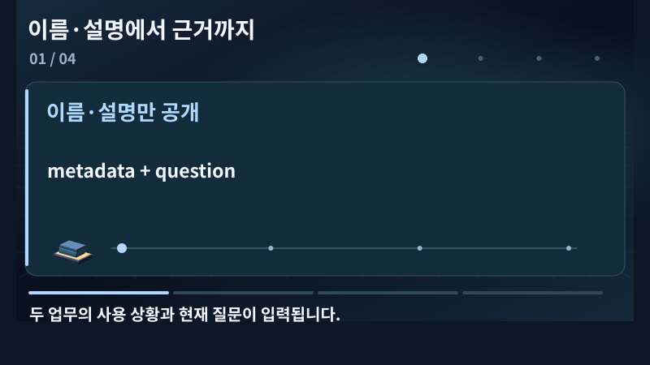
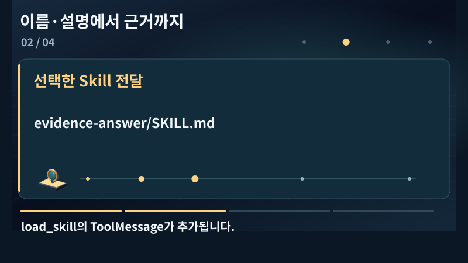
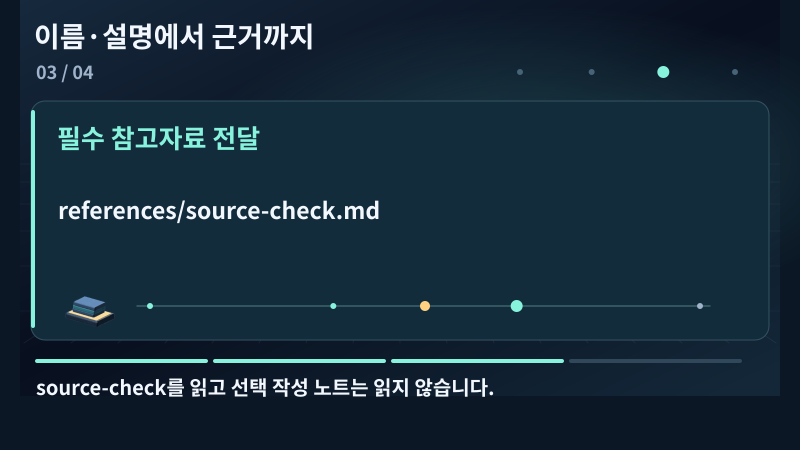
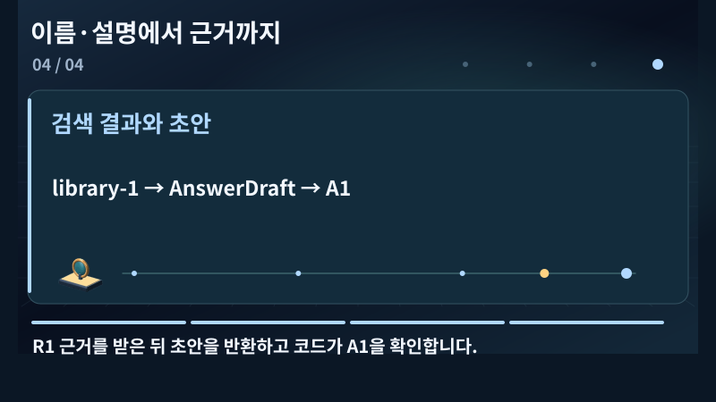

필요한 Skill과 참고자료만 읽기
질문은 ‘대출 기간은 며칠인가요?’입니다. 전체 지침을 매번 넣는다면 보고서에만 쓰는 비교 자료까지 모델 입력에 들어갑니다. 여기서는 어떤 문서를 어느 시점에 읽었는지 추적합니다.
수업 노트북
실행을 확인한 커널은 Python 3.12.15입니다.
목록을 볼 때 공개할 정보
‘Skill 목록’ 안에서 ‘설명으로 선택’를 거쳐 어느 값이 오른쪽에 남는지 보세요.
목록에서는 설명을 읽고 선택한 지침만 펼칩니다.
처음에는 작업의 이름과 설명만 보여 줍니다. 질문을 받은 뒤 필요한 Skill 본문을 읽고 그 안에서 지정한 참고자료를 엽니다. 전체 파일을 미리 넣는 방식과 같은 질문으로 비교하세요.
셀 01 · 선택한 지침만 읽기
파일 읽기를 작은 사전 조회로 표현했습니다. 선택한 이름이 어떤 본문으로 이어지나요?
files = {"evidence-answer/SKILL.md": "답변 전 references/source-check.md에서 원문 대조 기준을 읽는다.",
"comparison-report/SKILL.md": "동일 조건의 두 실행 기록을 비교한다."}
chosen = "evidence-answer"
print(files[f"{chosen}/SKILL.md"])실행 결과
답변 전 references/source-check.md에서 원문 대조 기준을 읽는다.
대출 질문을 처리할 때 읽은 본문에는 원문 대조 안내가 나옵니다. 비교 보고서의 본문은 이번 입력에 들어가지 않았습니다.
셀 02 · 실행 기록에서 읽은 양 구하기
앞선 실행에서 읽은 파일 두 개의 크기입니다. 바이트 단위로 합계를 구하세요.
reads = {"evidence-answer/SKILL.md": 2511,
"evidence-answer/references/source-check.md": 1049}
print(sum(reads.values()))실행 결과
3560
두 파일의 크기를 더한 3560바이트입니다. 이 값은 모델의 입력 토큰이나 청구 금액이 아닙니다. 실제 파일 읽기 기록은 loading-trace.json에 있습니다.
엉뚱한 비교 절차를 골랐을 때
‘도서관 질문’에서 갈라지는 두 경우를 비교하세요. 위쪽은 ‘근거 찾기’, 아래쪽은 ‘잘못 고른 비교’입니다.
질문에 맞지 않는 비교 절차를 골랐는지 확인합니다.
‘비교’라는 단어 하나만 보고 Skill을 고르면 질문과 맞지 않을 수 있습니다. 선택한 이름, 읽은 참고자료, 인용한 원문 순서로 점검합니다. 선택과 읽기가 성공했어도 답의 의미는 따로 확인하세요.
과제 03 · 참고자료가 실제로 열렸나요?
필수 참고자료가 현재 읽기 기록에 들어 있는지 검사하세요. 본문을 열었다는 사실만으로는 충분하지 않습니다.
True는 제공된 읽기 기록에서 해당 경로를 찾았다는 뜻입니다. 지금 파일을 열어 확인한 결과와 구별하세요. 직접 읽기를 측정할 때에는 파일을 열어 본 뒤 그 시점의 경로를 실행 기록에 남깁니다.
reference = 'evidence-answer/references/source-check.md'
# reads에 reference가 있는지 출력하세요.풀이와 실행 결과 보기
reference = 'evidence-answer/references/source-check.md'
print(reference in reads)실행 결과
True
True는 파일 읽기를 확인한 결과입니다. 14일이라고 답했는지는 답안 본문을 읽어야 알 수 있습니다.
같은 질문으로 로더의 선택을 바꿔 보기
‘실행 비교 질문’에서 출발해 ‘선택한 Skill’를 거친 뒤 ‘비교 절차’가 되는 순서를 따라가세요.
같은 질문에서 로더가 읽은 지침을 비교합니다.
모든 본문을 전달하면 모델은 비교 작업용 절차까지 읽습니다. 아래에서는 작업 하나의 본문만 반환하는 함수를 만들고, 잘못 선택했을 때 무엇이 보이는지 확인합니다.
셀 04 · 비교 Skill을 잘못 선택한 경우
대출 기간 질문에 비교 보고서용 이름을 전달합니다.
def load_skill(name):
return files[f"{name}/SKILL.md"]
print(load_skill("comparison-report"))실행 결과
동일 조건의 두 실행 기록을 비교한다.
읽힌 지침에는 두 기록을 비교한다는 말만 있습니다. 파일 읽기는 성공했어도 대출 규정의 출처를 찾는 절차를 받을 수 없습니다.
셀 05 · 질문에 맞는 본문 길이와 전체 길이
같은 파일 모음에서 필요한 본문만 뽑았을 때 문자열 길이를 셉니다.
all_instructions = "\n".join(files.values())
selected = load_skill("evidence-answer")
print(len(selected), len(all_instructions))실행 결과
48 70
첫 수는 대출 답변에 필요한 본문 길이, 둘째 수는 비교 지침까지 붙인 전체 길이입니다. Python의 문자 수이므로 모델의 실제 토큰 사용량은 따로 측정해야 합니다.
다시 풀어 보기
같은 자료로 비교 보고서를 요청한다면 필요한 입력이 두 실행 기록으로 바뀝니다. 목록에 남길 정보와 선택한 뒤 읽을 정보를 각각 한 가지씩 설명하세요.
관련 개념 더 읽기
선택한 지침을 필요한 시점에 전달하기
57일에는 두 업무의 절차를 Skill로 작성했습니다. 오늘은 하나의 Agent에 load_skill과 read_reference를 연결합니다. 이름·설명 목록을 먼저 보여 주고, 선택한 본문과 필요한 참고자료를 이후 메시지로 전달하는 순서를 확인합니다.
이런 단계별 공개를 progressive disclosure라고 부릅니다. 한 번에 모든 상세를 넣지 않고 필요할 때 추가하는 방식입니다. 이번 실습은 실제 create_agent와 로컬 파일을 사용하지만 모델 응답은 미리 정한 대본입니다. 파일 전달과 코드 정책을 확인하며 자연어 선택 능력이나 지침 준수 성능을 측정하지 않습니다.
57일의 이름·설명과 확인 기록에서 시작하기
먼저 두 description만 읽고 대출 질문과 실행 비교 요청에 어떤 Skill이 필요한지 설명합니다. 그 뒤 본문에서 입력·필수 참고자료·사람 확인 위치를 찾습니다. 자신의 57일 초안이 미완성이면 제공 정본으로 시작했다고 기록합니다.
56일의 BasicPolicy는 search_documents 전용 도구 검사였습니다. 오늘은 모델 응답 검사를 재사용하면서 load_skill/read_reference/search_documents 세 도구의 입력과 반환을 별도로 검사합니다. 기존 RunContext와 같은 API로 가정하지 않고 새 SkillContext와 run_skill_case를 사용합니다.
모델 입력에서 공개 순서 따라가기
첫 시스템 메시지에는 두 Skill의 이름·설명과 공통 실행 안내가 있습니다. 본문이나 참고자료 내용은 없습니다. 대본이 load_skill을 요청하면 도구가 해당 파일을 읽어 ToolMessage로 반환하고, 다음 모델 호출의 입력에 그 내용이 들어갑니다.
참고자료도 read_reference의 반환 메시지로 추가됩니다. 이미 읽은 본문이 매번 새 시스템 프롬프트로 바뀌는 것은 아닙니다. 한 실행의 메시지 목록에서 선택 본문과 필요한 참조를 이어서 볼 수 있습니다. 이것을 장기 기억이나 다중 사용자 저장으로 해석하지 않습니다.
이름·설명에서 근거까지
이름·설명, 선택한 절차, 필요한 참고자료 순으로 입력을 늘립니다. 읽은 글자 수와 검색 도구를 부른 횟수는 따로 세세요.
이름과 설명만 보는 시점과 실제 근거 파일을 읽는 시점을 구분하세요.
간단한 설명으로 작업을 고른 뒤 필요한 지침과 참고 자료를 차례로 엽니다.
- 01목록
- 02본문
- 03참조
- 04근거

STEP 01 · 모델 호출 1이름·설명만 공개
두 업무의 사용 상황과 현재 질문이 입력됩니다.
metadata + question

STEP 02 · 모델 호출 2선택한 Skill 전달
load_skill의 ToolMessage가 추가됩니다.
evidence-answer/SKILL.md

STEP 03 · 모델 호출 3필수 참고자료 전달
source-check를 읽고 선택 작성 노트는 읽지 않습니다.
references/source-check.md

STEP 04 · 모델 호출 4검색 결과와 초안
R1 근거를 받은 뒤 초안을 반환하고 코드가 A1을 확인합니다.
library-1 → AnswerDraft → A1
로딩을 실제 도구로 연결하기
load_skill은 임의 경로 대신 목록에 있는 이름을 받습니다. read_reference는 Skill 이름과 허용된 참고자료 이름을 받습니다. 두 도구의 content는 모델에게 전달할 본문이고 artifact는 어떤 파일을 읽었는지 확인할 경로·해시·바이트 기록입니다.
로더는 파일을 읽을 뿐 SKILL.md 안의 명령을 Python이나 셸로 실행하지 않습니다. 도구 입력을 엄격한 스키마로 확인하고, 원래 루트 밖의 경로와 허용하지 않은 참고자료를 거부합니다. 파일 내용이 바뀌어 해시가 다르면 제공 정본으로 조용히 실행하지 않습니다.
하나의 Agent와 새 Context 연결하기
run_skill_case는 실행마다 새 로더와 정책을 만들고 create_agent를 한 번 구성합니다. 세 도구는 같은 Agent에 등록하며 별도 subagent를 만들지 않습니다. 답변 업무는 AnswerDraft, 비교 업무는 ComparisonDraft를 ToolStrategy의 형태로 받습니다.
SkillContext의 task_kind는 호출자가 정한 연습 조건입니다. 정답 업무를 이미 알고 있으므로 다른 Skill을 고른 요청을 코드가 거부할 수 있습니다. 이 거부를 모델이 자연어 의도를 정확히 분류했다는 증거로 쓰지 않습니다. 허용 목록과 호출 상한도 호출자 설정이며 Skill 내용으로 바꾸지 않습니다.
| 구분 | 내용 |
|---|---|
| 유지 | 모델 거부/빈 응답·한 턴 한 도구·호출 ID·상한 검사 |
| 확장 | 세 실제 도구의 입력·반환·읽기 순서 검사 |
| 새 입력 | SkillContext의 업무 종류·허용 목록·상한 |
| 새 결과 | A1 답변 또는 별도 비교 report와 로딩 기록 |
정상 대출 질문에서 파일과 호출 수 읽기
examples 폴더의 기존 55·56일 Python 환경에서 lesson_demo.py를 실행합니다. 새 설치나 API 키는 필요하지 않습니다. 기본 대출 대본은 load_skill→필수 참조→검색→초안 순서이며 모델 4회, 실제 도구 3회, 검색 1회입니다.
본문과 참고자료는 두 개를 읽습니다. 다른 Skill과 authoring-notes는 읽지 않습니다. model_inputs의 두 번째·세 번째·네 번째 항목에서 각각 본문·참조·R1이 추가된 위치를 찾습니다. 최종 A1의 generation_calls=1은 받은 초안을 사용하는 단계이며 외부 모델을 추가로 한 번 부른 횟수가 아닙니다.
미로딩과 오선택을 같은 질문으로 비교하기
not_loaded 대본은 Skill을 읽지 않고 검색을 먼저 요청합니다. 코드는 실제 검색을 실행하기 전에 skill_not_loaded로 멈춥니다. wrong_skill 대본은 비교 Skill을 선택합니다. 파일을 한 번 읽지만 호출자가 정한 답변 업무와 맞지 않아 wrong_skill_selected로 멈추며 본문을 후속 모델에 보내지 않습니다.
두 실패는 정상 경로보다 호출 수가 적지만 더 좋은 답변을 만들었다는 뜻이 아닙니다. 업무를 수행하기 전에 막혔기 때문입니다. 파일 읽기·도구 요청·실제 실행·모델 호출을 서로 다른 횟수로 기록합니다.
| 경로 | 모델/검색 | 본문·참조 읽기 | 결과 |
|---|---|---|---|
| normal | 4 / 1 | 2 | answered, 사람 의미 검토 별도 |
| not_loaded | 1 / 0 | 0 | skill_not_loaded, result=null |
| wrong_skill | 1 / 0 | 1 | wrong_skill_selected, result=null |
두 번째 Skill로 실행 기록 보고서 만들기
비교 업무는 comparison-report 본문과 comparison-data.json을 읽습니다. 도서관 검색 도구를 호출할 필요가 없으므로 검색은 0회이고 모델은 3회입니다. 결과는 A1 답변으로 가장하지 않고 별도 report에 넣습니다.
코드는 question_id별 필드와 두 행 전체를 입력 데이터에 대조합니다. 순서가 바뀌는 것은 허용하지만 중복·누락·다른 숫자는 거부합니다. summary의 결론 타당성은 이 필드 검사로 평가하지 않습니다. 사람 검토 전 human_review는 not_performed입니다.
본문 지시와 코드 정책이 충돌할 때
필수 참고자료를 읽지 않고 검색하려 하면 reference_not_loaded로 멈춥니다. 다른 question이나 k로 검색하려 해도 최초 요청 조건과 다르면 거부합니다. 등록되지 않은 도구, 허용 목록 밖의 도구, 초과한 호출 예산도 실제 실행 전에 확인합니다.
이 검사는 Skill 문장이 선의인지 악의인지 판단하는 분류기가 아닙니다. 특정 실행 순서와 입력 범위를 코드로 정한 것입니다. 문서에 정책 무시 지시가 들어 있어도 코드의 허용 목록·상한·경로 검사를 통과해야 하며, 문서 내용 자체를 실행하지 않습니다.
| 입력/상태 | 기록 | 실행 범위 |
|---|---|---|
| 필수 참조 미로딩 | reference_not_loaded | 검색 0회 |
| 경로 이탈/목록 밖 참조 | reference_not_allowed | 해당 참조 읽기 전 거부 |
| 허용 목록 밖 도구 | tool_not_allowed | 해당 도구 실행 전 거부 |
| 모델/도구 상한 도달 | model_limit/tool_limit | 처리할 수 없는 추가 도구 실행 중지 |
| R1이 k보다 많이 반환 | data_contract_error | 검색 후 초안 호출 없이 중지 |
빈 검색·운영 오류·인용 오류를 구분하기
주차 질문은 같은 가상 자료를 정상 검색해도 근거가 없습니다. 이때 모델 3회까지 진행한 뒤 로컬 종료 메시지로 끝내며 초안 생성은 0입니다. 검색 함수가 TimeoutError를 던진 경우에는 자료가 없다고 결론 내리지 않고 운영 오류/result=null로 남깁니다.
초안을 만들었지만 [missing]처럼 실제 검색 객체에 없는 인용을 붙이면 completed/invalid_citation과 빈 sources를 반환합니다. 이미 초안이 있었더라도 최종 result 상태를 사용해야 합니다. messages나 draft를 최종 답변 대신 그대로 보여 주지 않습니다.
| 상황 | run_status / A1 | 후속 확인 |
|---|---|---|
| 정상 빈 검색 | completed / no_evidence, 생성 0 | 자료 범위와 질문 대조 |
| 검색 장애 | error / result=null | 환경·함수 오류 기록 |
| 잘못된 인용 | completed / invalid_citation | 실제 검색 id와 초안 대조 |
| 유효 인용·틀린 사실 | completed / answered 가능 | 원문 의미 직접 대조 |
읽은 기록과 맞는 답변 사이의 간격 확인하기
다음 대본은 필수 파일을 모두 읽고 실제 R1을 받지만 999일이라는 초안을 내놓습니다. 인용 ID는 유효하므로 A1 상태는 answered일 수 있습니다. 파일 전달과 인용 연결 검사는 통과했어도 원문 14일과 사실이 다릅니다.
비교 보고서도 숫자를 맞춘 채 실제 비용 우열을 단정할 수 있습니다. 제공 meaning-review는 작성자가 이 모순과 근거 부족을 직접 읽은 예시입니다. 학생의 사람 확인 완료나 자동 의미 평가 결과로 복사하지 않습니다.
새 실행을 남기고 제공 기록 보존하기
demo.py는 여덟 시나리오를 실행해 runs/latest/loading-trace.json에 새 기록을 씁니다. samples/skills/loading-trace.json은 제공 관찰로 보존합니다. demo의 output을 samples나 skills 폴더로 지정하면 덮어쓰기를 거부합니다.
다음 Agent 기능에 넘길 경계
63·66·101일에는 같은 로딩 기록과 API의 제한을 참고합니다. 오늘의 파일 읽기가 호스트 설치, 장기 기억, 서비스 권한, 다른 Agent 실행을 완성한 것은 아닙니다. 추가 도구를 붙이면 새 입력·반환·상한 검사를 따로 설계해야 합니다.
학생용 consumer-contract는 examples 안의 파일만 고정하며 강사 자료를 포함하지 않습니다. prototype의 검수 계약은 보존한 별도 기록입니다. 자기 실행과 의미 검토는 학생 빈 양식에서 시작하고, 실제 확인하지 않은 항목은 다음 단계에 그대로 넘깁니다.